概要
最新のLazuriteIDEをダウンロードし、インストールしてください。
ロームセンサーシールドのライブラリが更新されています。
センサーシールドに各センサーが搭載された小型のセンサーモジュールを挿入して使用します。使用するセンサーによって、電圧や挿入場所を変更する必要がありますので注意してください。詳細は「2-2. センサーモジュールの外観とセンサーの種類」をご確認ください。
センサーシールドの外観と挿入位置
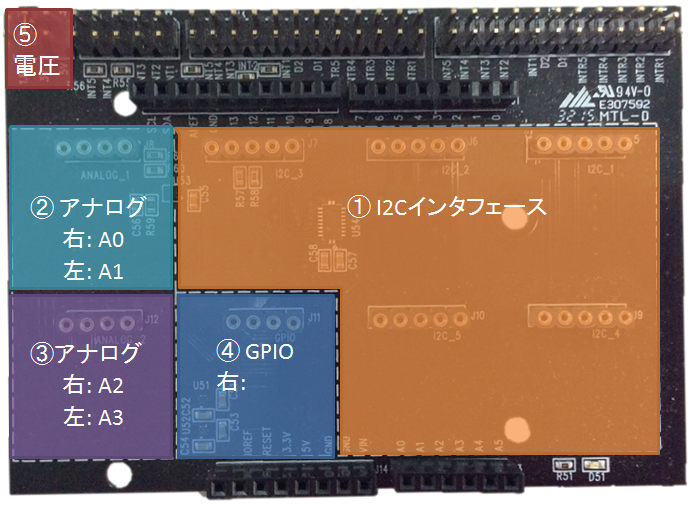
注意： 5Vで使用すると無線モジュールとの併用はできませんので注意してください。
| センサーシールド | センサー型番 | センサーの種類 | 参考資料 | サンプルプログラム グラフ設定ファイル |
挿入場所 | ⑤電圧設定 |
| 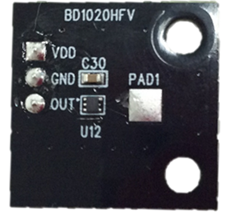 | BD1020HFV | 温度センサー | 基板の温度を測定します。 センサーシールドには4つ端子がありますが、モジュールには3つしか端子がありません。右に寄せて配置してください。 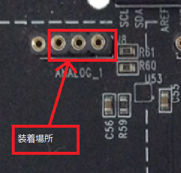 ・Lazuriteの電圧設定は5Vにしてください。 ・920MHz無線モジュールは接続しないでください。 ・LazuriteのAREFとIOREF端子をショートして使用してください。 |
BD1020_serial | ② | 3V, 5V |
| 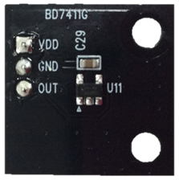 | BD7411 | ホールセンサー |
磁気が近づくと0を出力し、磁気がないと1を出力します。 ドアや蓋などに磁石を搭載しておくことで、開閉を検出ことができます。 センサーシールドには4つ端子がありますが、モジュールには3つしか端子がありません。右に寄せて配置してください。 ・Lazuriteも5Vの設定にしてください。 ・920MHz無線モジュールは接続しないでください。 |
BD7411_serial | ② | 5V |
| 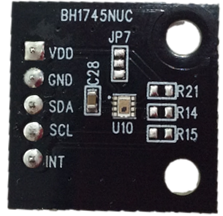 | BH1745 | カラーセンサー (R、G、B、クリア) |
光の三原色であるRGB（赤、青、緑)を検出することができるセンサーです。 | BH1745_serial | ① | 3V |
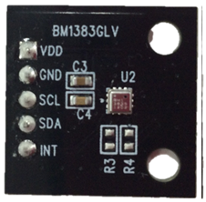 |
BM1383 | 気圧センサー (温度、気圧) |
気圧と温度を検出することができるセンサーです。気圧は、高いところが値が小さくなり、低いと値が大きくなります。数10cmのレベルを検出することができるため、高さを推測することも可能です。 気圧の値は大気圧をはじめとする環境によって変化するため、相対値で計算する必要があります。 |
BM1383_serial | ① | 1.8V 3V |
| 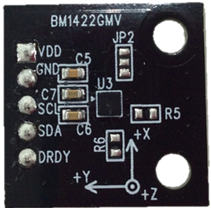 | BM1422 | 3軸 地磁気センサー |
地磁気を検出することができるセンサーです。東西南北等の方角を得ることができます。 近くにモーター等の磁気があると値がずれるので注意してください。 |
BM1422_serial | ① | 1.8V |
| 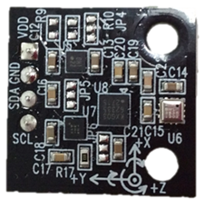 | 10軸コンボモジュール (現段階では未発売です) |
3軸 加速度 3軸 ジャイロ 3軸 地磁気 1軸 気圧 合計10軸 |
加速度とジャイロ(KXG03)、地磁気(BM1422)、気圧(BM1383)を搭載したセンサーモジュールです。 | Axis10_serial | ① | 3V |
| 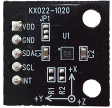 | KX022 | 3軸 加速度 | 加速度を測定します。 加速度を静止させておくと重力の向きを検出することができます。 加速度センサーを動かすと、その動きに応じた加速度が発生するためにセンサーがどの方向に動いたかを検出することができます。 一定の速度で動作していると加速度は発生しません。 |
KX022_serial | ① | 1.8V 3V |
| 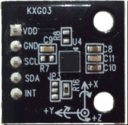 | KXG03 (現段階では未発売です) |
3軸 加速度 3軸 角速度(ジャイロ) |
加速度と角速度(ジャイロ)の測定が可能です。 |
KXG03_serial | ① | 3V |
| 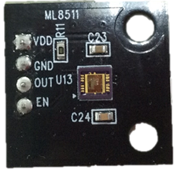 | ML8511 | UVセンサー |
・センサーについては、紫外線
(UV) センサ ML8511Aを参照してください。 ・Lazuriteの電圧設定は5Vにしてください。 ・920MHz無線モジュールは接続しないでください。 ・LazuriteのAREFとIOREF端子をショートして使用してください。 |
ML8511_serial | ② | 3V |
| 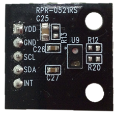 | RPR-0521 | 照度 近接 |
照度は明るさを測定するセンサーです。 近接センサーはセンサーの前に物体が来たことを検出することができます。検出可能な距離は数センチの範囲です。近接センサーの代表的なアプリケーションはスマートフォンで通話時に画面操作を無効にするのに利用されており、耳が近づいたことを検出するセンサーに |
RPR0521_serial | ① | 3V |
ここでは、照度／近接センサー RPR0521_graphをセンサーシールドにさした例で説明します。
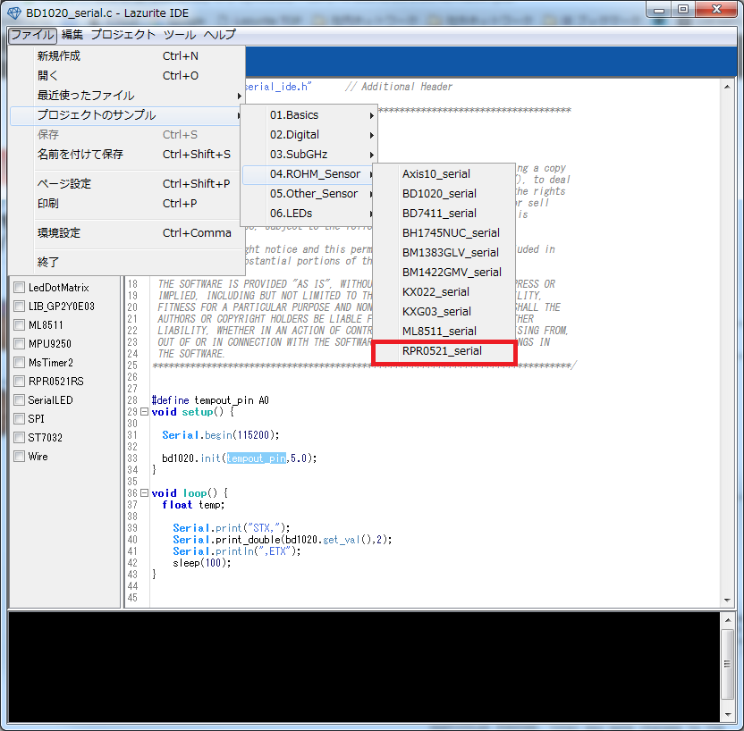
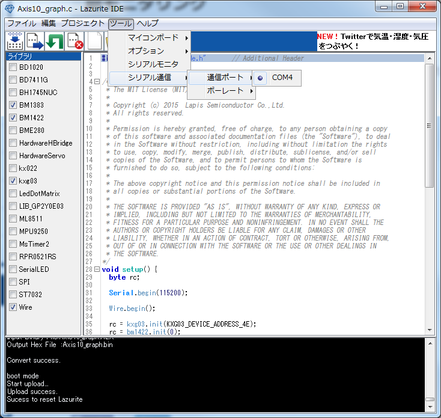
プログラムの書き込みが終了するまで待ってください。
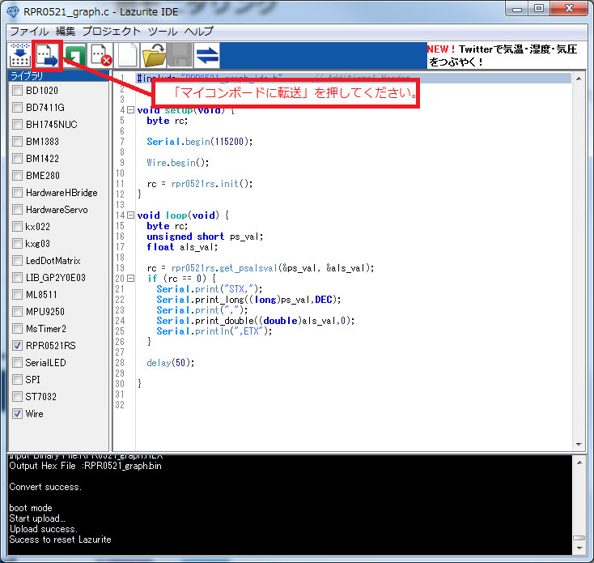
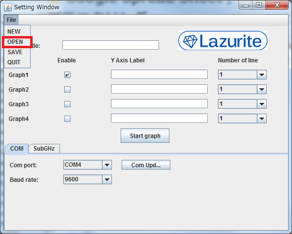
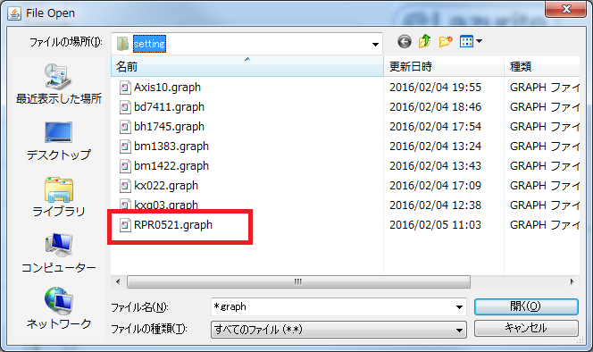
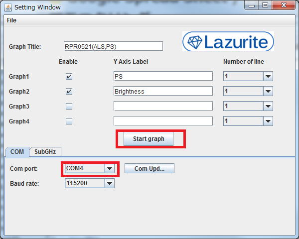
グラフの画面が立ち上がり、照度や近接センサーの値をリアルタイムにモニタリングした結果が表示されます。
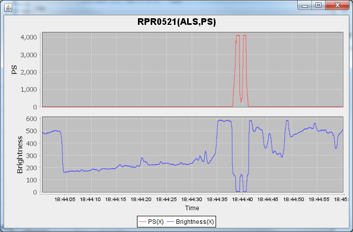